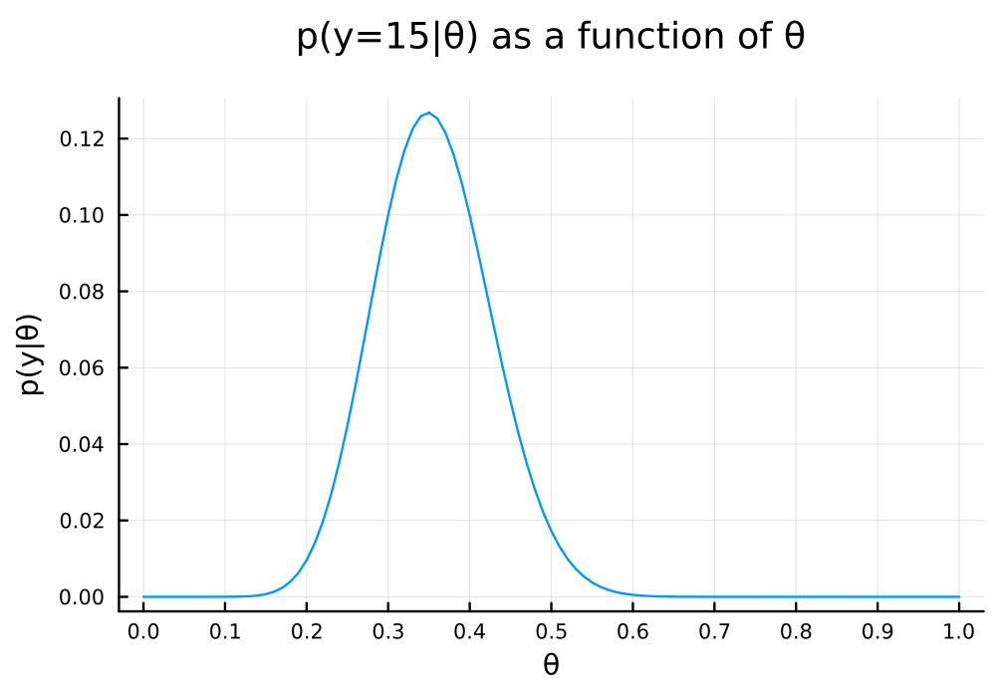
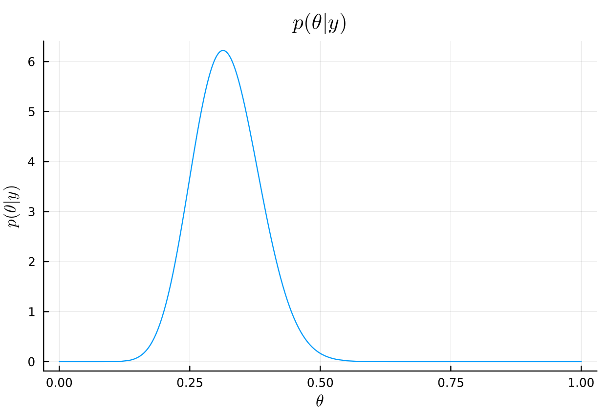
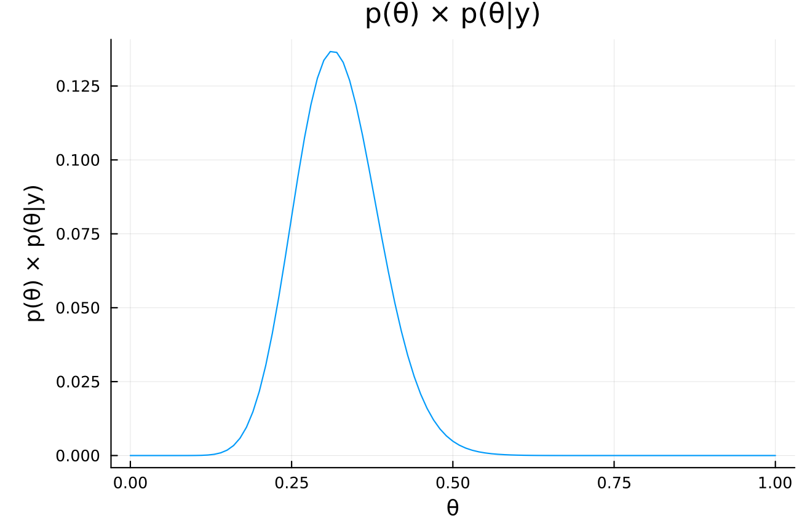

Exercise 3.4 Solution Example - Hoff, A First Course in Bayesian Statistical Methods
標準ベイズ統計学 演習問題 3.4 解答例
a
using Distributions using Plots using StatsPlots using LaTeXStrings a₀ = 2 b₀ = 8 n = 43 y = 15
# prior plot( Beta(a₀, b₀), title=L"p(\theta)", xlabel=L"\theta", ylabel=L"p(\theta)", legend=false, )

θ = 0:0.01:1.0 pdf_for_θs = map(θ -> pdf(Binomial(n, θ), y), θ) # plot p(y|θ) plot( θ, pdf_for_θs, xlabel = "θ", ylabel = "p(y|θ)", title = "p(y=$y|θ) as a function of θ", legend = false, size = (600, 400) , margin = 5mm , xticks = 0:0.1:1.0 )

# posterior posterior_dist = Beta(a₀ + y, b₀ + n - y) plot( posterior_dist, title=L"p(\theta|y)", xlabel=L"\theta", ylabel=L"p(\theta|y)", legend=false, )

# posterior mean mean(posterior_dist) μ = (a₀ + y)/(a₀ + b₀ + n)
0.32075471698113206
# posterior mode mode(posterior_dist) (a₀ + y - 1)/(a₀ + b₀ + n - 2)
0.3137254901960784
# posterior standard deviation std(posterior_dist) var = (μ*(1 - μ))/(a₀ + b₀ + n + 1) sqrt(var)
0.0635188989834093
# posterior 95% interval quantile(posterior_dist, [0.025, 0.975])
2-element Vector{Float64}:
0.2032977878191033
0.45102398221663165
b
a₀_b = 8 b₀_b = 2
# prior plot( Beta(a₀_b, b₀_b), title=L"p(\theta)", xlabel=L"\theta", ylabel=L"p(\theta)", legend=false, )

# posterior posterior_dist_b = Beta(a₀_b + y, b₀_b + n - y) plot( posterior_dist_b, title=L"p(\theta|y)", xlabel=L"\theta", ylabel=L"p(\theta|y)", legend=false, )

# posterior mean mean(posterior_dist_b) μ_b = (a₀_b + y)/(a₀_b + b₀_b + n)
0.4339622641509434
# posterior mode mode(posterior_dist_b) (a₀_b + y - 1)/(a₀_b + b₀_b + n - 2)
0.43137254901960786
# posterior standard deviation std(posterior_dist_b) var_b = (μ_b*(1 - μ_b))/(a₀_b + b₀_b + n + 1) sqrt(var_b)
0.06744531631926798
# posterior 95% interval quantile(posterior_dist_b, [0.025, 0.975])
2-element Vector{Float64}:
0.30469562471174694
0.5679527959964581
c
using SpecialFunctions prior_mix = θ -> 1//4 * gamma(10) / (gamma(2) * gamma(8)) * (3 * θ * (1 - θ)^7 + θ^7 * (1 - θ))
xs = 0:0.01:1.0
plot(
xs, prior_mix.(xs),
xlabel = "θ", ylabel = "p(θ)",
title = "mixture of a beta(2,8) and a beta(8,2) prior distribution",
titlefontsize = 12,
legend = false,
size = (600, 400)
, margin = 5mm
, xticks = 0:0.1:1.0
)

a)やb)の事前分布と異なり、上の分布は 2 つの山を持った形状になっている。この事前分布は、再犯率は高いか低いかのどちらかに偏っているという信念を表している。
This prior distribution has two peaks, indicating a belief that the recidivism rate is either high or low, rather than being centered around a moderate value like the priors in a) and b).
d
i
ii
Beta(17, 36) and Beta(23, 30)
iii
cond_prob = θ -> pdf(Binomial(n, θ), y) prior_times_cond_prob = θ -> prior_mix(θ) * cond_prob(θ) xs = 0:0.001:1.0 plot( xs, prior_times_cond_prob.(xs), xlabel = "θ", ylabel = "p(θ) × p(θ|y)", title = "p(θ) × p(θ|y)", legend = false, )

# prior_times_cond_probが最大になるθ xs[argmax(prior_times_cond_prob.(xs))]
The mode of a) is 0.313 and the mode of b) is 0.431, so this posterior mode is located in between, closer to a).
e
The posterior distribution is calculated as follows:
\begin{align*} p(\theta \mid y) &= \frac{p(y \mid \theta) p(\theta)}{p(y)} \\ & \propto p(y \mid \theta) p(\theta) \\ &= \begin{pmatrix} n \\ y \end{pmatrix} \theta^y (1-\theta)^{n-y} \times \frac{1}{4} \frac{\Gamma(10)}{\Gamma(2)\Gamma(8)} \left[3 \theta (1-\theta)^7 + \theta^7 (1-\theta)\right] \\ & \propto 3 \theta^{y+1} (1-\theta)^{n-y+7} + \theta^{y+7} (1-\theta)^{n-y+1} \\ \end{align*}As the normalizing constant \(C\) is given by:
\begin{align*} C &= \int_0^1 \left[ 3 \theta^{y+1} (1-\theta)^{n-y+7} + \theta^{y+7} (1-\theta)^{n-y+1} \right] d\theta \\ &= 3 \int_0^1 \theta^{(y+2)-1} (1-\theta)^{(n-y+8)-1} d\theta + \int_0^1 \theta^{(y+8)-1} (1-\theta)^{(n-y+2)-1} d\theta \\ &= 3 \cdot \frac{\Gamma(y+2) \Gamma(n-y+8)}{\Gamma(n+10)} + \frac{\Gamma(y+8) \Gamma(n-y+2)}{\Gamma(n+10)} \\ &= \frac{3\Gamma(y+2) \Gamma(n-y+8) + \Gamma(y+8) \Gamma(n-y+2)}{\Gamma(n+10)} \\ \end{align*}the posterior distribution can be expressed as:
\begin{align*} p(\theta \mid y) &= \frac{1}{C} \left[ 3 \theta^{y+1} (1-\theta)^{n-y+7} + \theta^{y+7} (1-\theta)^{n-y+1} \right] \\ &= \frac{\Gamma(n+10) \cdot \Gamma(y+2) \Gamma(n-y+8)}{3\Gamma(y+2) \Gamma(n-y+8) + \Gamma(y+8) \Gamma(n-y+2)} \cdot \frac{3 \theta^{y+1} (1-\theta)^{n-y+7}}{\Gamma(y+2) \Gamma(n-y+8)} \\ &\quad+ \frac{\Gamma(n+10) \cdot \Gamma(y+8) \Gamma(n-y+2)}{3\Gamma(y+2) \Gamma(n-y+8) + \Gamma(y+8) \Gamma(n-y+2)} \cdot \frac{\theta^{y+7} (1-\theta)^{n-y+1}}{\Gamma(y+8) \Gamma(n-y+2)} \\ &= \frac{3 \Gamma(y+2) \Gamma(n-y+8)}{3\Gamma(y+2) \Gamma(n-y+8) + \Gamma(y+8) \Gamma(n-y+2)} \cdot \mathrm{dbeta}(\theta, y+2, n-y+8) \\ &\quad+ \frac{\Gamma(y+8) \Gamma(n-y+2)}{3\Gamma(y+2) \Gamma(n-y+8) + \Gamma(y+8) \Gamma(n-y+2)} \cdot \mathrm{dbeta}(\theta, y+8, n-y+2) \\ \end{align*}The posterior weights represent the updated probability of each model being correct after observing the data \((y, n)\). The formula embodies the principle: Posterior Belief ∝ Prior Belief × Evidence.
Each weight’s numerator is a product of two key components:
- Prior Belief: The coefficients 3 and 1 reflect our initial assumption that beta(2,8) was three times more likely to be correct than beta(8,2).
- Evidence from Data: The Gamma function terms \(\Gamma(y+2) \Gamma(n-y+8)\) and \(\Gamma(y+8) \Gamma(n-y+2)\) are the decisive parts that determine which distribution gains more support from the data. A distribution that better aligns with the data will have a larger value.
In short, the posterior weight for each distribution is determined by its initial credibility combined with the strength of support it receives from the data.